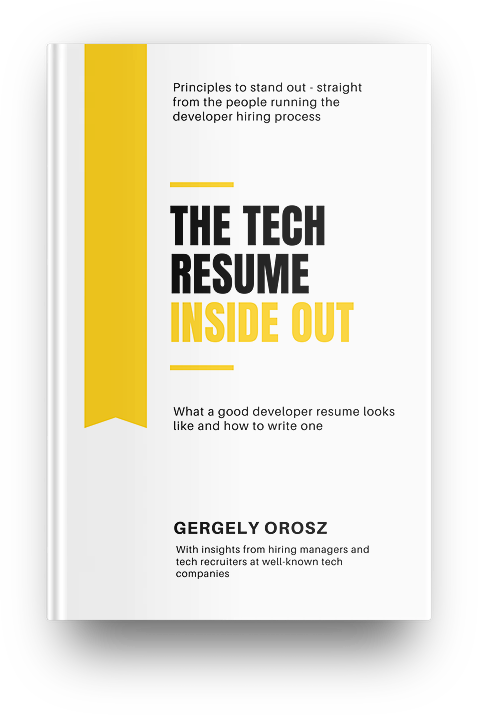

The Tech Resume Inside Out, by Orosz
Friday January 7, 2022
I read this when I was re-doing my resume last spring, and I think it helped. Here are some changes to my resume that I made based on its advice:
- With double the experience, I cut the length in half to get to one page.
- I dropped my full address, keeping just city and state.
- I put job titles before and more prominently than employer names.
- Instead of paragraphs describing jobs, 16 bullet-points, all single lines.
- Lots of active voice, immediate quantitative detail, and specifics.
- Instead of a separate section, programming languages etc. mentioned in context.
- I dropped months, so dates of employment only include years.
I didn't make a separate resume for every position I applied for, but I did distribute at least six different versions for different kinds of roles.
Do resumes matter? I'm not sure. You probably still need to have one though. And it may be that the less they matter, the better the signal you provide by still having a good one. People who are great do the little things well.
If nothing else, thinking about your resume can focus your work: How would what I'm doing today look on my resume? If you're doing something that would seem pointless on a resume, maybe you should do something else.
